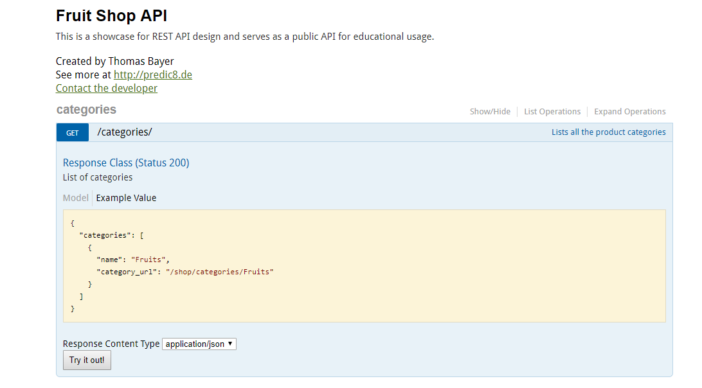

Introduzione
la seconda settimana di alternzanza e’ partita con la presentazione di un altro progetto, questa volta legato maggiormente alle nostre competenze. Infatti i dipendenti dell’azienda Blulink, in particolare il project manager Claudio Soli, hanno presentato l’utilizzo del linguaggio C# (C sharp), per comunicare con i server. L’obbiettivo del progetto era di insegnare le 4 operazioni fondamentali che si possono fare su un server, GET, POST, DELETE, PUT. Al termine dell’attivita’, questa volta non c’era da esporre nulla. Hanno pero' anche presentato in generale il loro lavoro a Blulink, il servizio che offrivano e le competenze necessarie.
Il nostro team
in team questa volta ero con solo ragazzi di 3D, e utilizzando
prima un programma facilitatore, chiamato POSTMAN,
abbiamo effettuato tutte le operazioni fondamentali.
Questa prima operazione ha occupato il primo giorno di progetto.
Il secondo giorno invece abbiamo dovuto, tramite l’aiuto di altri
dipendenti di Blulink, scrivere completamente da 0 il codice, ne e’
risulatata un’esperienza molto stimolante dato che C# non lo avevamo
mai usato prima.
In particolare, io e un mio compagno ci siamo occupati di reperire
in rete diversi algoritmi e soluzioni.
Il nostro programma
il programma che abbiamo realizzato il secondo giorno, scritto in C# su visual studio
code, era molto completo, infatti prendeva in input un link riguardante
delle le API modificabili, sotto forma di file .json e una volta preso in
input questo link, tramite il programma era possibile decidere di compiere le operazioni fondamentali,
gia’ elencate prima.

quello che succedeva in breve era che, tramite il nostro codice
il programma si interfacciava con questo server che seguendo il link
inserito in input dall'utente elaborava le informazioni relative al link stesso,
e l'utente decideva quali delle operazioni fondamentali eseguire.
Era quindi possibile inserire il link in quali erano presenti le informazioni
di vari frutti, e tramite il programma inserirne un altro, oppure cancellarlo,
modificarlo ecc.
Conclusione
Quest’attivita’ e’ stata diversa dalle altre, infatti richiedeva una maggiore concentrazione e una maggiore determinazione, ammetto di aver trovato alcune delle istruzioni, dateci dagli impiegati di Blulink, incomplete e inutili, pero’ l’ho trovata comunque un’attivita’ proficua, anche per la presentazione generale del lavoro di programmatore che ci hanno mostrato